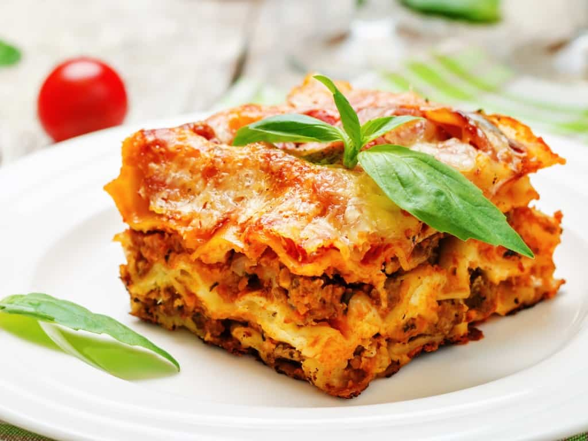

Lasagne Recipe
for 4 persons
Ingridients
- 1000 g of meat
- 1 can of pureed tomatoes (4-500 g)
- 1 tbsp of tomato paste
- 2 Onions
- 3-4 cloves of garlic
- Morney Sauce
- Lasagne plates
- Grated cheese
- 1 dl of Balsamico (or red wine vinegar)
- 2 tbsp of dried basil
- 2 tbsp of dried oregano
- 1 tbsp of sugar
- Salt
- Pepper
- Cooking oil. Olive oil prefered
How to make this thing
- Chop onions and garlic
- Add a good chunk of cooking oil to a cooking pot or sorté pan and heat to medium-high heat
- Add onions and garlic and let fry for 3-4 min, but leave one clove of garlic for later
- Add minched meat and fry until all the meat has turned brown
- Add pureed tomatoes, tomato paste, basil, oregano, sugar, balsamico and the last clove of garlic. Season with salt and peber
- Turn down heat to low and let simmer for 30-60 min without lid. The longer the better.
- Taste sauce and add salt, pebber and balsamico until it taste is spot on
- Pour some of the lasagne souce in a lasagne dish, then add some Morney sauce, then cover with lasagne plates. Repeat until out of lasagne sauce. Add grated cheese as the final layer
- Put in preheated oven on 200 Celsius for 30-40 min or until the chesse is golden brown
- Let rest for 15 min before serving
Tip: replace some of the meat with grated carrots or egg plant for a healthier and cheaper dish